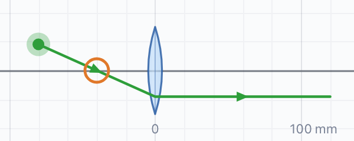
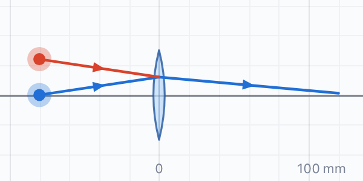
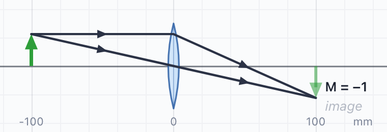
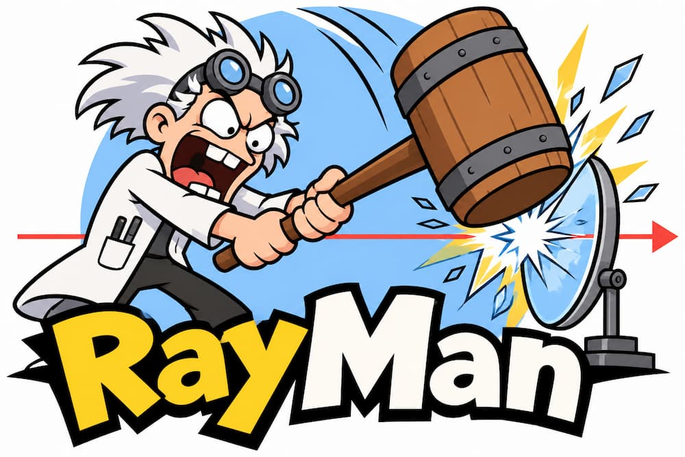

Draw
Colour
For the next ray you draw.
Fill-in rays per bundle
Faint rays between the two outermost rays of each bundle (two or more rays from the same point).
Settings
Objects
How to use RayMan
Drawing rays
Click to start, on the object tip, a point source, F, F′ or anywhere. Move, then click to place the segment; it stops at the next lens. It snaps parallel to the axis (the axis lights up), through F, F′ or a lens centre (a ring appears) or straight on.

Where several rays end at the same point (two beams hitting a lens at the same places), the one in the current ray colour is continued.

Click a ray’s end to continue it, or a point along it to branch. Only a ray of the kind you are drawing is continued: with ordinary rays chosen, a helper’s end starts a new ordinary ray. Double-click to extend to the next lens or the edge. Del removes the selected ray’s last segment. The small triangle on the Ray tool sets the colour of the next ray; to recolour an existing ray (or beam), select it with Select first.
Images
When two rays from the same point cross after a lens, the image appears where they cross, and the rays stop there. If they spread apart instead, a virtual image appears where their backward extensions meet (must be enabled in Settings). An image is an object for the next lens: start new rays from its tip. Or Shift-click the image to carry a ray that ends there on through it.

Hints
The lightbulb (G) shows the three rules at the top of the screen and colours the rays you draw by the rule they follow: parallel blue, focal red, central green. Turn it off and the colours go too.
Snapping
A dragged lens lines up its centre, F or F′ with other lenses’ focal points: drag lens 2 until its F sits on F′ of lens 1 for a 4f system. Hold Alt to place freely.
iPad
Draw with the Pencil: tap, or press, drag and lift, to place each segment. Fingers pan (one), zoom (pinch) and tap to select; they never draw. Tap the active tool again to cancel a segment, and use the bin on the rail to delete.
Tools
- V
- Select: drag a lens along the axis, drag F or F′ to change f, drag a lens end to resize it, drag a ray’s free end or start to re-draw it
- X
- Add an optical axis (there can be several, one above another; drag one to move everything on it)
- L
- Place a thin lens; it snaps onto the nearest axis
- O
- Place an object arrow
- P
- Place a point source; rays drawn from it take its colour (set it in its panel) and are copied with it
- C
- Place a collimated beam (width, angle, colour in its panel; its three rays go to the first lens). ⇧R turns it round to run right to left
- A
- Place a lamp filament (drag its top and bottom ends)
- M
- Place a scan mirror (light passes through it from either side, turned by its tilt)
- I
- Place an iris (drag the edges of its opening to open or close it)
- S
- Mark an image plane: the sample, then the camera (rename and colour it in its panel). Rays pass through it; draw a ray to it and it ends there
- D
- Place a dichroic: light passes, except the colour you choose in its panel for it to stop
- R
- Draw a ray
- H
- Draw a helper ray: dashed, makes no images, and passes through lenses (click right at a lens to end it there)
Keys
- Esc
- Cancel, back to Select, deselect
- Del
- Delete the selection (a ray: its last segment)
- ⌘C
- Copy the selected component: a ghost follows the cursor, click to paste (Shift-click for several); ⌘V pastes again
- ⇧R
- Reverse the selected ray (its start becomes its end, to continue from). On a beam: turn it round
- N
- Name the selected ray (r1, h2…): a number at the end is drawn as a subscript
- E
- Objects: switch light sources (with their rays) and helper rays off and on, to keep a busy diagram readable
- ← →
- Nudge along the axis (Shift: further)
- ⌘Z
- Undo (Shift: redo)
- F
- Fit everything in view
- Space
- Hold and drag to pan; scroll to zoom
The bench is kept in this browser between visits. Save to a file to keep it safe.
Full guide →
Helper rays, a negative lens, light from infinity, rays through an image, irises and fill-in rays, sharing and embedding.

By the SWC AMF and Claude.
(Mostly by Claude)
swcmicroscopy.com
Reset the canvas?
This removes every lens, object and ray. You can still undo it with ⌘Z.